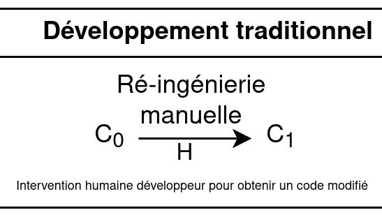
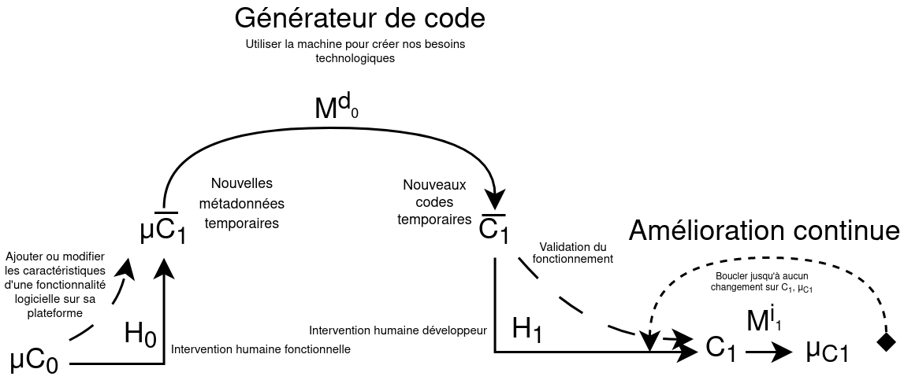
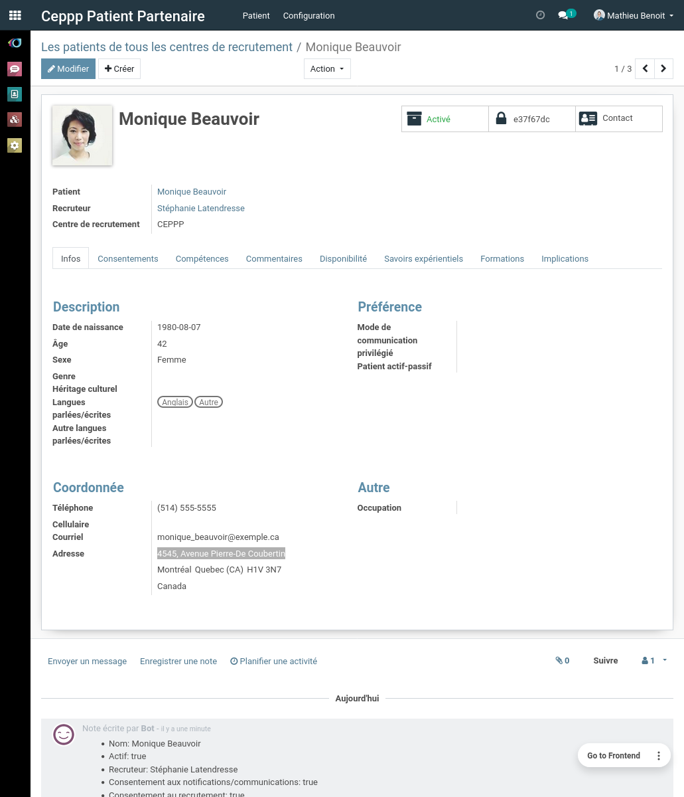
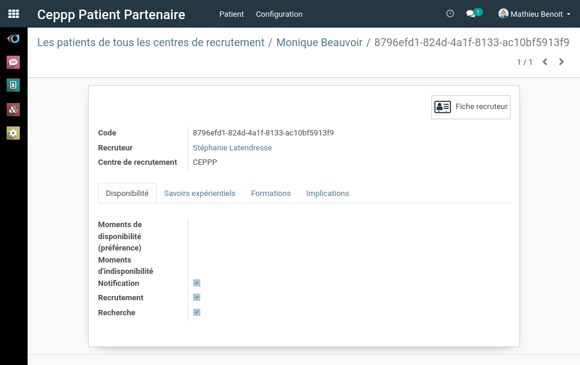
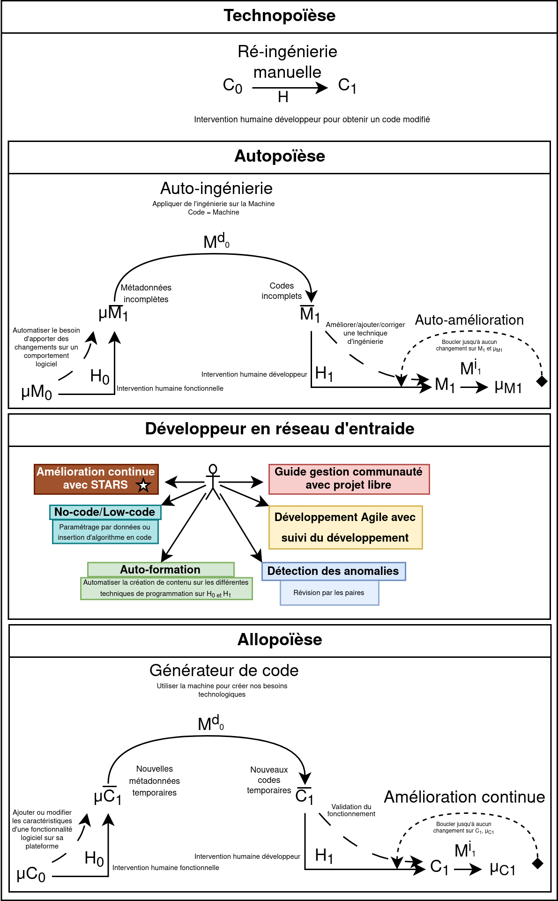

Présenté par Mathieu Benoit
- Président : Martin Trépanier, Ph. D.
- Directeur de recherche : Samuel Jean Bassetto, Doctorat
- Membre : Giovanni Beltrame, Ph. D.
Plan de présentation
- Présentation de Mathieu Benoit
-
Résultats
- 6 niveaux de production en ingénierie numérique
- Projets d'étude ORE et CEPPP
- Conclusion
Mathieu Benoit
- Développeur de logiciel libre
- Entrepreneur
- B.Ing. Informatique Libre
Mathieu Benoit
- MathBenTech - 2018
- SantéLibre - 2020
- TechnoLibre - 2020
Développement ERPLibre pour automatiser Odoo et rendre accessible un déploiement 100% libre.
Valeur du libre
- Solution pour réseau d'entraide
- Sans limitation technique pour comprendre et résoudre des défis
- Valorisation et reconnaissance du développeur logiciel
Démonstration - Générateur module ERPLibre
Module :
Niveau 0 - Ingénierie de production sans numérique
- Procédure papier
- Faire de l'entraide
- Réaliser des projets communautaires
Niveau 1 - Ingénierie de production avec numérique
- Communication
-
Partage et gestion des ressources
- Gestion du matériel
- Suivi des procédures et traçabilité
-
Système de reconnaissance sur l'entraide

- Amélioration continue
Logiciel Libre - 4 libertés
- utiliser sans restriction;
- étudier pour valider le fonctionnement;
- copier pour permettre la diffusion;
- modifier pour adapter, en redistribuant.
Copyleft ©
Licence libre au Québec
guide de référence gouvernementale sur les logiciels libres et ouverts
Système ERPLibre version 1.5.0
2977 modules accessibles
Application ERPLibre
Marché des solutions ERP évalué autour de 40 milliards USD mondialement en 2020
Bénéfice technique d'utiliser Odoo
- ORM
- MVC
- Website builder
- Modulaire
- Python + XML + Javascript
Ingénierie traditionnelle en développement logiciel
Automatisation du développement

Pour réduire le temps de développement, faciliter son déploiement et le suivi de la satisfaction d'utilisation.
Problématique
- Développement perpétuel, de longue durée, coûteux en temps et argent
- Difficile d'avoir une pérennité sur des projets bénévoles
- Maintenance exigente et risque d'introduire des erreurs est important
Niveau 2 - Générateur de code
Projet existant
https://github.com/bluisknot/github_odoo_apps/tree/12.0
- code_generator
- code_generator_db_servers
Démonstration de génération de code
Technique
- Génération par gabarit
- Génération avec des données
Problématique du niveau 2
Niveau 3 - Générateur de code avec rétroaction
Par rétro-ingénierie
Boucle de génération de code qui permet l'amélioration continue.
Rétro-ingénierie
Technique de génération de code avec rétroaction
Ingénierie
Architecture du générateur de code
Diagramme de séquence d'utilisation du générateur de code
Performance d'exécution du générateur
- Exécution de génération. 1s, 5s, 30s.
- Migration de modèle de données. Accorderie, 1m 30s.
- Migration de données (importation). Plusieurs heures.
Mesurer les performances
Il y a plusieurs cas à étudier.
- Ingénierie manuelle. Exemple 1h.
- Ajout technique de génération. Exemple 1h (base) + ajout (1h)
- Exécution de la technique. 1-5 secondes l'algorithme. 15 min choisir les données.
Démonstration de génération de code avec rétroaction
Technique
- Mise à jour des métadonnées selon le code
Problématique
Niveau 4 - Autopoïèse
Poïèse
Processus créatif de fabrication, de production ou de création.
Technopoïèse
Processus créatif de développement technologique.
La technologie est un outil.
Allopoïèse
Un système qui développe quelque chose avec des composantes externes.
Autopoïèse
Un système qui se développe soi-même avec seulement des composantes internes.
Contraire de l'Allopoïèse
C'est un auto-reproducteur!
Auto-reproducteur
Le quine se produit par lui-même, de niveau 0. C'est un programme informatique qui imprime son propre code source.
Résultat
Interface - Visualisation des modèles
Interface - Visualisation des champs

Interface - Visualisation des hooks
Interface - Visualisation des morceaux de code
Technique d'autopoïèse
Problématique
Niveau 5 - Sympoïèse
Un système qui se développe en collectivité et en collaboration qui a un effet bénéfique sur les écosystèmes.- Technologie éthique
- Sortir des individus/organismes de l'isolement
- Gérer des cas d'urgences
- Mouvement des villes en transition
- Automatisation collaborative entre robot
- Réduction du réchauffement climatique
Impact sur l'industrie
- Respecter les demandes et besoins de leurs consommateurs;
- Bénéficier d'une réduction du gaspillage de temps de développement.
Projet d'étude - ORE
Offrir Recevoir ÉchangerAccorderie
Migration de données, migration du modèle de données, génération du portail, etc.
Démonstration ORE
- Processus d'échange de temps
- Adaptation en temps réel du processus via un diagramme de relation.
Projet d'étude - CEPPP
Avec SantéLibre
CEPPP
Extraction du modèle de données d'une plateforme externe en PHP + ré-ingénierie.
CEPPP technique anonymisation des données
Anonymisation des données (non supporté par le générateur)
CEPPP technique
Conclusion
Principale conclusions de la recherche
Ingénierie
Question demeurée sans réponse
Comprendre le fonctionnement d'un système autopoïèse fonctionnel.
Étudier le changement de forme d'un système en continu changement sur les techniques choisis.
Migration des données automatisées.
Peut-on générer toute la plateforme entièrement pour Accorderie et CEPPP?
Débouchent sur de nouvelles voies de recherche
Intégration NLP, auto-génération, auto-amélioration. Robot codeur libre!
Tester la gestion de projet en simulation état d'urgence.